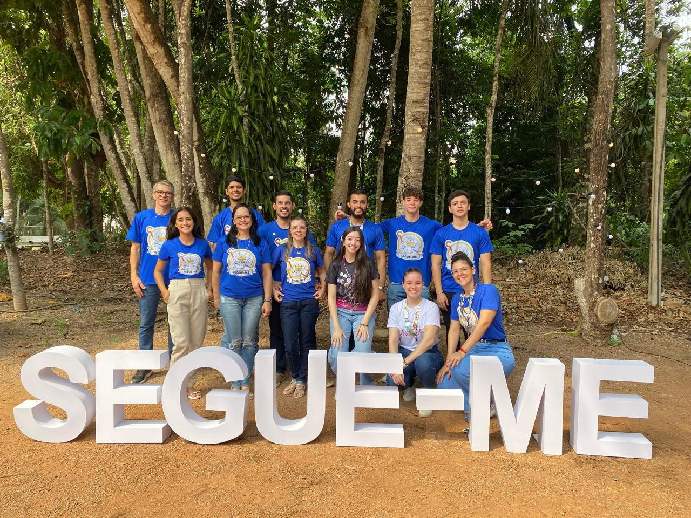

Querida equipe:
Queridos Andreia, Tarciso, Wanderson, Eduardo, Lucas, Pamela, Suellen do David, David, Thiago e Valentina e Suellen...
Com o coração transbordando de gratidão, venho agradecer a cada um de vocês por todo o carinho e dedicação que ofereceram durante nosso servir neste encontro do II Segue-me da Catedral. Foi maravilhoso ver como Deus agiu por meio de cada um de vocês, para que tudo desse certo.
Nossa Equipe
- Andreia e Tarciso - Casal Coordenador
- Wanderson - Jovem Coordenador
- Larissa - Jovem Coordenador
- Eduardo - Jovem
- Lucas - Jovem
- Pamela - Jovem
- Suellen e David - Casal Apoio
- Suellen - Jovem
- Thiago - Jovem
- Valentina - Jovem
Obrigada Equipe!
Com carinho, Larissa Samaniotto.